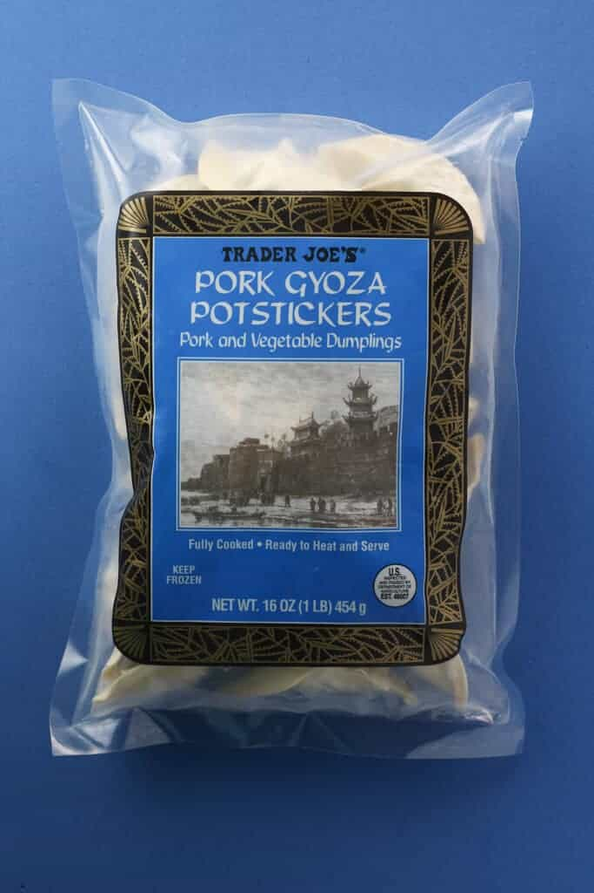

Gyoza fom TJs

Description
TJs Pork Gyoza Potstickers are a delicious and cheap staple of the Nick
Ng diet. Here is how he prepares them.
Ingredients
- potstickers
- olive oil
- apple cider vinegar
- soy sauce
Steps
- Drizzle olive oil onto large pan and heat until hot.
- Place potstickers onto pan and cook on medium for 3min.
- Add water into pan until 1/3 of potsticker height submerged, cover
with lid and cook for 3min.
- Remove lid and unstick potstickers. Heat on high for 1min.
- Creat dipping sauce of 1/3 soy sauce 2/3 apple cider vinegar.
- Serve and enjoy!